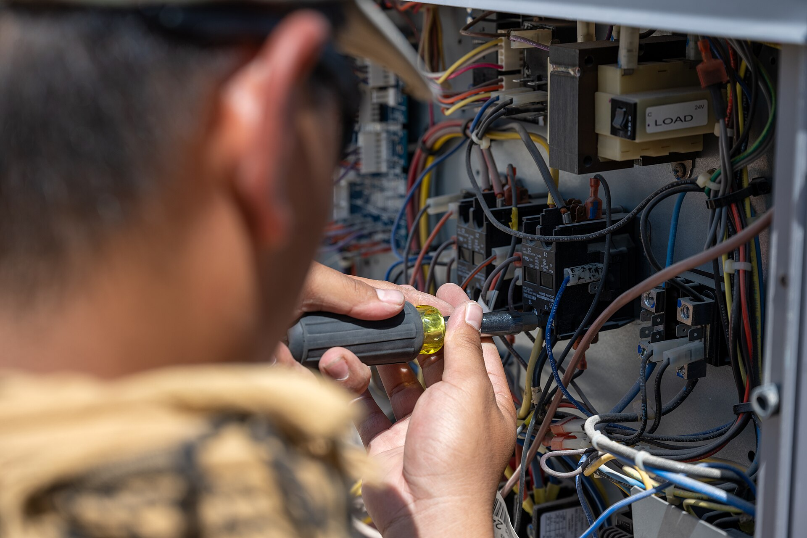

Keep every
inquiry moving.
You’re busy delivering the service. We help keep your new website and chat leads moving toward a confirmed appointment.
Get a free walkthrough
Keep things moving.
A form submission is the beginning of the conversation. Our team follows up with new online inquiries by phone or text, gathers what is needed, and helps customers take the next step.
New leads, followed up
We call or text people who contact your business through your website or chat. Human follow-up runs during the coverage hours agreed with your business.
Questions and details
We clarify the service request, collect customer information, and help answer basic questions within the agreed workflow. Technical questions and exceptions are handed back to your team when needed.
Appointments confirmed
Appointment details are checked and confirmed using your agreed booking process. Your schedule and customer records are kept up to date for a clearer handoff.
A clear record
Customer records and a monthly report help you understand inquiry handling and booked appointments. We focus on consistent follow-through rather than promising a particular number of jobs.
This package does not include answering live incoming phone calls. For phone answering, old lead and estimate follow-up, or dedicated dispatch support, explore the Dedicated Dispatcher System.